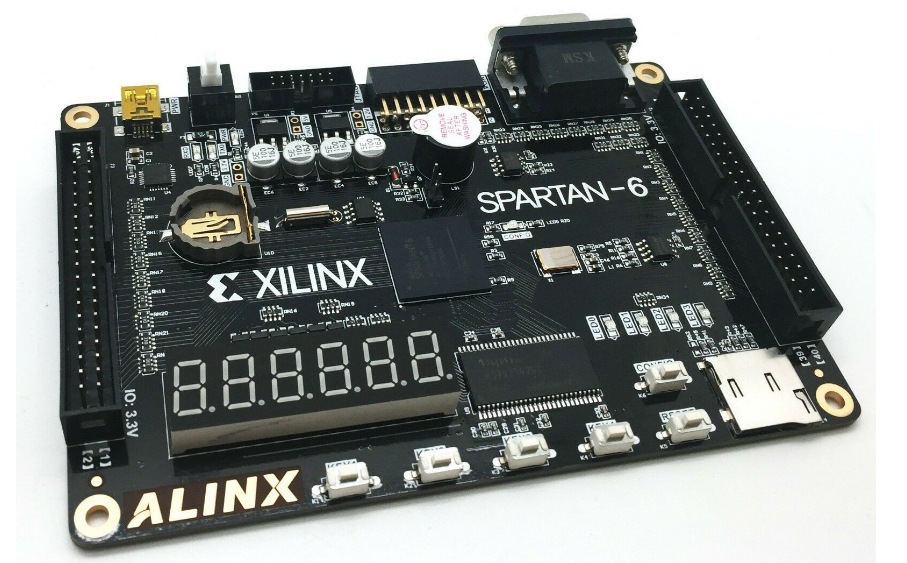

MIPS微系统设计方案
设计概述
本文设计的是由Verilog实现的MIPS微系统，该微系统支持45条MIPS汇编指令（不含乘除指令），支持系统中断，最终实现在FPGA（可编程逻辑门阵列）上的系统验证。

为了实现该功能，我们需要对P7工程代码进行一定修改，包括删除乘除指令模块和系统任务使其可综合、增加Tube、UART、GPIO等外设驱动模块、对系统桥Bridge进行调整等等。

实现指令说明
我们将本CPU实现的指令分为以下几类：
-
calc_R: add,sub,addu, subu, and, or, nor, xor, slt, sltu
-
calc_I: addi,addiu, andi, ori, xori, slti, sltiu
-
shift: sll, sra, srl
-
shiftv: sllv, srav, srlv
-
load: lw, lh, lhu, lb, lbu
-
store: sw, sh, sb
-
B类：beq,bne,bgtz,blez,bgez,bltz
-
J类：j, jal, jr, jalr
-
特殊：lui
-
CP0相关指令：mfc0，mtc0
-
异常中断返回： eret
工程模块定义
该部分我们仅介绍与P7不同的模块——Bridge，Tube，UART，GPIO
fpga_top（顶层模块）
该模块替代P7中的mips模块，增加了和外设（数码管、LED等等）通信的IO接口。
| 信号名 | 方向 | 位宽 | 描述 |
|---|---|---|---|
| clk_in | I | 1 | 时钟信号 |
| sys_rstn | I | 1 | 低电平同步复位信号 |
| dip_swithc0 | I | 8 | 第0组拨码开关控制信号 |
| dip_swithc1 | I | 8 | 第1组拨码开关控制信号 |
| dip_swithc2 | I | 8 | 第2组拨码开关控制信号 |
| dip_swithc3 | I | 8 | 第3组拨码开关控制信号 |
| dip_swithc4 | I | 8 | 第4组拨码开关控制信号 |
| dip_swithc5 | I | 8 | 第5组拨码开关控制信号 |
| dip_swithc6 | I | 8 | 第6组拨码开关控制信号 |
| dip_switch7 | I | 8 | 第7组拨码开关控制信号 |
| user_key | I | 8 | 用户按键开关控制信号 |
| led_light | O | 31 | LED灯控制信号 |
| digital_tube2 | O | 8 | 第2组四段数码管驱动信号 |
| digital_tube_sel2 | O | 1 | 第2组四段数码管片选信号 |
| digital_tube1 | O | 8 | 第1组四段数码管驱动信号 |
| digital_tube_sel1 | O | 3 | 第1组四段数码管片选信号 |
| digital_tube0 | O | 8 | 第0组四段数码管驱动信号 |
| digital_tube_sel0 | O | 3 | 第0组四段数码管片选信号 |
| uart_rxd | I | 1 | UART接收信号 |
| uart_txd | O | 1 | UART发送信号 |
Bridge（系统桥）
| 信号名 | 方向 | 位宽 | 描述 |
|---|---|---|---|
| clk | I | 1 | 时钟信号 |
| reset | I | 1 | 高电平同步复位信号 |
| A_in | I | 32 | 写入/读取的外设单元的地址 |
| WD_in | I | 32 | 写入外设单元的数据 |
| byteen | I | 4 | 写入外设单元的使能 |
| DM_RD | I | 32 | DM读取值的输入 |
| Timer_RD | I | 32 | Timer读取值的输入 |
| UART_RD | I | 32 | UART读取值的输入 |
| Tube_RD | I | 32 | Tube读取值的输入 |
| GPIO_RD | I | 32 | GPIO读取值的输入 |
| A_out | O | 32 | 写入/读取的外设单元的地址 |
| WD_out | O | 32 | 写入外设单元的数据 |
| RD_out | O | 32 | 外设单元的读取值输出 |
| DM_WE | O | 4 | DM写入使能 |
| Timer_WE | O | 1 | Timer写入使能 |
| UART_WE | O | 1 | UART写入使能 |
| Tube_WE | O | 4 | Tube写入使能 |
| GPIO_WE | O | 4 | GPIO写入使能 |
| UART_STB | O | 1 | UART片选信号 |
Tube（数码管驱动模块）
| 信号名 | 方向 | 位宽 | 描述 |
|---|---|---|---|
| clk | I | 1 | 时钟信号 |
| reset | I | 1 | 高电平同步复位信号 |
| A | I | 32 | 读/写数码管的地址 |
| WD | I | 32 | 写入数码管的数据 |
| WE | I | 1 | 数码管写入使能 |
| RD | I | 32 | 数码管读取数据 |
| digital_tube2 | O | 8 | 第2组四段数码管驱动信号 |
| digital_tube_sel2 | O | 1 | 第2组四段数码管片选信号 |
| digital_tube1 | O | 8 | 第1组四段数码管驱动信号 |
| digital_tube_sel1 | O | 3 | 第1组四段数码管片选信号 |
| digital_tube0 | O | 8 | 第0组四段数码管驱动信号 |
| digital_tube_sel0 | O | 3 | 第0组四段数码管片选信号 |
GPIO（通用IO驱动模块）
该模块位于CPU模块中，主要用于获取外部中断信息和内部异常信息，进行判断后输出异常/中断请求。同时该模块中设有四个寄存器——SR，Cause，EPC和PRIP。
| 信号名 | 方向 | 位宽 | 描述 |
|---|---|---|---|
| clk | I | 1 | 时钟信号 |
| reset | I | 1 | 复位信号 |
| A | I | 32 | 读GPIO的地址 |
| WD | I | 32 | 写入GPIO的数据 |
| WE | I | 1 | GPIO写入使能 |
| dip_swithc0 | I | 8 | 第0组拨码开关控制信号 |
| dip_swithc1 | I | 8 | 第1组拨码开关控制信号 |
| dip_swithc2 | I | 8 | 第2组拨码开关控制信号 |
| dip_swithc3 | I | 8 | 第3组拨码开关控制信号 |
| dip_swithc4 | I | 8 | 第4组拨码开关控制信号 |
| dip_swithc5 | I | 8 | 第5组拨码开关控制信号 |
| dip_swithc6 | I | 8 | 第6组拨码开关控制信号 |
| dip_switch7 | I | 8 | 第7组拨码开关控制信号 |
| user_key | I | 8 | 用户按键开关控制信号 |
| RD | O | 8 | GPIO的读取数据 |
| led_light | O | 32 | LED灯控制信号 |
UART模块
该模块为系统桥，实际上是区分地址的组合逻辑模块，用于CPU和DM、Timer1、Timer0之间的的数据交换。
| 信号名 | 方向 | 位宽 | 描述 |
|---|---|---|---|
| CLK_I | I | 1 | 时钟信号 |
| RST_I | I | 1 | 高电平同步复位信号 |
| ADD_I | I | 3（[4:2]） | 读/写UART的地址 |
| WE_I | I | 1 | UART写使能信号（和CPU交互） |
| DAT_I | I | 32 | UART写入数据（和CPU交互） |
| STB_I | I | 1 | UART片选信号输入 |
| RxD | I | 1 | UART接收数据（和外设交互） |
| DAT_O | O | 32 | UART读取数据（和CPU交互） |
| ACK_O | O | 1 | UART片选信号输出 |
| TxD | O | 1 | UART发送数据（和外设交互） |
| inter | O | 1 | 中断请求信号 |
重要机制实现方法
IP Core 的使用和相关调整
因为在P8实验中，为了使得我们的微系统是“可综合的”，我们需要将用常规方法描述的DM和IM删去，同时用FPGA内封装好的特殊功能部件——“块储存器”（“IP核”的一种）来替换。我们在ISE中生成后，直接在我们的微系统中调用即可。调用模板如
1 | IM u_IM(//input |
与我们之前使用的IM和DM不同，P8中使用的块储存器是 “同步读出”，这种行为差异造成了数据读出的时机不同，为了适应这一变化，需要对流水线的结构作出一定的修改。笔者采用的是修改流水寄存器的方法，即短接法。教程中的描述为——
修改流水级寄存器。由于 Block RAM/ROM 的读端口可以抽象成组合逻辑与寄存器的连接，而 P6/P7 的流水线则是将组合逻辑读出的值输入 M/W 级流水寄存器；因此若将 M/W 级流水寄存器中的流水m_data_rdata的寄存器短接，就等价于将 Block RAM 读出端的"寄存器"移到了 M/W 流水寄存器上。这样修改后，流水线的结构与修改前几乎是相同的。
此外，我们该需要对D级流水寄存器和Bridge进行相应调整
-
D级寄存器的调整：为保证D 级发生阻塞时，指令被正确地 stall 在 D 级，我们需要D级流水寄存器中增加一个l临时寄存器来存储上一次在D级的instruction。然后再通过一个选择信号来选择当前进入D级的instruction是IM同步读出的instrcution还是临时寄存器中的instruction。清空延迟槽时将D级instruction置0的操作也类似。
1
2
3
4
5
6
7
8
9
10
11
12
13
14
15
16
17
18
19
20
21
22//D级流水寄存器
reg stall_tag;
reg clr_tag;
reg [31:0] last_instr_reg;
assign D_instr = clr_tag ? 32'd0 :
stall_tag ? last_instr_reg :
F_instr;
always @(posedge clk) begin
if(reset)begin
last_instr_reg <= 0;
stall_tag <= 0;
clr_tag <= 0;
end
else begin
last_instr_reg <= D_instr;
stall_tag <= (~en) ? 1'b1 : 1'b0;
clr_tag <= (reset | req | BD_clr) ? 1'b1 : 1'b0;
end
end -
Bridge的调整：由于Bridge沟通的外设既有同步读的DM，也有异步读的Timer，Tube，UART，GPIO等设备，这样在Bridge向CPU传数据的时候会产生冲突。因此笔者将他们的读方式统一成“同步读”，方法是——在Bridge为每一个外设设置一个数据寄存器（DM除外），每个时钟上升沿更新从这些外设中异步读出的值。此外，我们还需要将被访问的外设的地址存进一个临时寄存器，每次根据这个临时寄存器的地址从若干数据寄存器中选择相应的值，返回到CPU中。
1
2
3
4
5
6
7
8
9
10
11
12
13
14
15
16
17
18
19
20
21
22
23
24
25
26
27
28
29//read
reg [31:0] Timer_RD_reg;
reg [31:0] UART_RD_reg;
reg [31:0] Tube_RD_reg;
reg [31:0] GPIO_RD_reg;
reg [31:0] A_reg;
always @(posedge clk) begin
if(reset) begin
Timer_RD_reg <= 0;
UART_RD_reg <= 0;
Tube_RD_reg <= 0;
GPIO_RD_reg <= 0;
A_reg <= 0;
end
else begin
Timer_RD_reg <= Timer_RD;
UART_RD_reg <= UART_RD;
Tube_RD_reg <= Tube_RD;
GPIO_RD_reg <= GPIO_RD;
A_reg <= A_in;
end
end
assign RD_out = (A_reg >= 32'h0 && A_reg <= 32'h2fff) ? DM_RD :
(A_reg >= 32'h7f00 && A_reg <= 32'h7f0b) ? Timer_RD_reg :
(A_reg >= 32'h7f20 && A_reg <= 32'h7f3b) ? UART_RD_reg :
(A_reg >= 32'h7f40 && A_reg <= 32'h7f47) ? Tube_RD_reg :
(A_reg >= 32'h7f50 && A_reg <= 32'h7f5b ||A_reg >= 32'h7f60 && A_reg <= 32'h7f63) ? GPIO_RD_reg : 32'd0;
数码管驱动设计
数码管驱动中有两个寄存器，和对其他外设的操作一样，我们需要实现CPU对寄存器的读写。代码比较简单，如下所示
1 | reg [15:0] tube_0_data; |
在数码管驱动设计中，我们不仅要能够向驱动中的寄存器读写数据，还要根据驱动内部寄存器的值向真正的数码管传递对应的电平信号，来控制数码管的亮灭。四段数码管为一组，每组数码管由一个驱动信号、一个片选信号控制。原理如下

一段数码管显示的16进制数与控制信号的关系如下表所示(注意：实验中采用的是共阳极数码管，低电平时亮，高电平时灭)
| 数码管显示的16进制数 | 数码管控制信号{DP,G,F,E,D,C,B,A} |
|---|---|
| 0 | 0xC0 |
| 1 | 0xF9 |
| 2 | 0xA4 |
| 3 | 0xB0 |
| 4 | 0x99 |
| 5 | 0x92 |
| 6 | 0x82 |
| 7 | 0xF8 |
| 8 | 0x80 |
| 9 | 0x90 |
| A | 0x88 |
| B | 0x83 |
| C | 0xC6 |
| D | 0xA1 |
| E | 0x86 |
| F | 0x8E |
为实现该功能，笔者设计了单独的模块Monitor来对一组数码管的亮灭进行控制，直接在Tube模块中调用即可。
1 | module Moniter( |
通用IO驱动设计
通用IO包括三部分——64 位用户输入微动开关、 8 个通用按键开关和LED、LED。前两个是输入设备，只有LED是输出设备。
-
对于输入设备（64 位用户输入微动开关、 8 个通用按键开关）而言，外部传来的数据只有在CPU读取该设备数据的时候才是有效的，也就是说，在CPU读其他外设时，无论该输入设备输进什么值，都是无效值，也就没有必要用寄存器将外界读取的值存储下来，只需要将输入设备的引脚直接连接到控制模块的读数据端口，使 CPU 将它们当作一个只读的寄存器。
-
对于输出设备（LED）而言，每次CPU写进设备驱动的数据都应该保存下来，这样才能保证CPU读写其他外设时，该驱动仍然向真正的输出外设稳定地输出数据。
整体写法也比较简单，如下所示——
1 | reg [31:0] led_reg; |
UART的修改
为了实现UART中断功能，即接收到一次完整的数据后向CPU产生中断信号，CPU对其进行响应，我们需要对UART进行一定的修改。其实也比较简单，仔细阅读高老板的代码后就知道，只需要两行代码即可实现。
1 | output inter; |
实现串口通信的mips代码也比较简单
1 | .text |
- Warning:一定要修改UART的头文件中有关时钟频率的宏定义（根据教程来，一般是将时钟频率改为50MHz）！否则会导致波特率不匹配！
软件代码编写——计算器和计数器
硬件搭好后，我们可以编写mips程序（即软件），将机器码加载进IM中，这样就可以通过软硬件的交互实现一定的功能。下面说明计算器和计数器两个题目的软件代码的编写
1.计算器
-
题目描述
用 64 个拨码开关输入 2 个操作数，其中第 7~4 组代表第一个操作数，第 3~0 组代表第二个操作数。用 8 个用户按键代表 8 种二元运算（可自行定义）。每次按下一个用户按键后（假设同一时刻至多有 1 个用户按键会被按下），将对应的运算结果输出至数码管。当没有用户按键按下时，保持之前的结果。
-
mips代码
1
2
3
4
5
6
7
8
9
10
11
12
13
14
15
16
17
18
19
20
21
22
23
24
25
26
27
28
29
30
31
32
33
34
35
36
37
38
39
40
41
42
43
44
45
46
47
48
49
50
51
52
53
54
55
56
57
58
59
60
61
62
63
64
65
66
67
68
69
70
71
72
73
74
75
76
77
78
79
80
81
82
83
84
85li $s0, 0x7f58
li $s1, 0x7f54
li $s2, 0x7f50
li $s3, 0x7f40
loop:
lw $t1, 0($s1)
lw $t2, 0($s2)
lbu $t0, 0($s0)
#li $v0, 5
#syscall
#move $t1, $v0
#li $v0, 5
#syscall
#move $t2, $v0
#li $v0, 5
#syscall
#move $t0, $v0
switch:
op_1:
li $t3, 1
bne $t0, $t3, op_2
nop
add $t4, $t1, $t2
j switch_end
op_2:
li $t3, 2
bne $t0, $t3, op_3
nop
sub $t4, $t1, $t2
j switch_end
op_3:
li $t3, 4
bne $t0, $t3, op_4
nop
and $t4, $t1, $t2
j switch_end
op_4:
li $t3, 8
bne $t0, $t3, op_5
nop
or $t4, $t1, $t2
j switch_end
op_5:
li $t3, 16
bne $t0, $t3, op_6
nop
xor $t4, $t1, $t2
j switch_end
op_6:
li $t3, 32
bne $t0, $t3, op_7
nop
sllv $t4, $t1, $t2
j switch_end
op_7:
li $t3, 64
bne $t0, $t3, op_8
nop
srlv $t4, $t1, $t2
j switch_end
op_8:
li $t3, 128
bne $t0, $t3, switch_end
nop
srav $t4, $t1, $t2
switch_end:
sw $t4, 0($s3)
#move $a0, $t4
#li $v0, 1
#syscall
j loop
nop
2.计数器的实现
- 题目描述
用第 3~0 组拨码开关输入一个初始值。当系统复位后，程序读取拨码开关的值并从这个值开始向下计数（每秒减1）至 0，你需要使用 timer 来实现此功能。当程序运行时，若拨码开关的值发生变化，则重新从拨码开关读取初值，并重新计数。
- mips代码
1
2
3
4
5
6
7
8
9
10
11
12
13
14
15
16
17
18
19
20
21
22
23
24
25
26
27
28
29
30
31
32
33
34
35
36
37
38
39
40
41.ktext 0x4180
handler:
beq $t2, $0, end
nop
addi $t2, $t2, -1
end: eret
#interrupt enable
ori $s0, 0xfff1
mtc0 $s0, $12
li $s0, 0x7f50 #input
li $s1, 0x7f40 #display
li $s2, 0x7f00
li $s3, 0x7f04
li $s4, 0xb
li $s5, 25000000
li $s5, 25
# t0 is input-value
# t1 is max-value
# t2 is value counter
loop:
lw $t0, 0($s0)
sw $t2, 0($s1)
beq $t0, $t1, loop
nop
begin:
sw $0, 0($s2)
move $t1, $t0
move $t2, $t0
sw $s5, 0($s3)
sw $s4, 0($s2)
j loop
nop
自动化生成coe文件
当我们写完软件部分的代码时，需要将其转换成机器码，同时还需要根据coe文件格式进行一定处理——文件开头加相应前缀，每行机器码后面需要加逗号。如果手动进行修改的话费时费力，可以通过下面的python脚本自动生成coe文件。
1 | import os |
If you like this blog or find it useful for you, you are welcome to comment on it. You are also welcome to share this blog, so that more people can participate in it. If the images used in the blog infringe your copyright, please contact the author to delete them. Thank you !